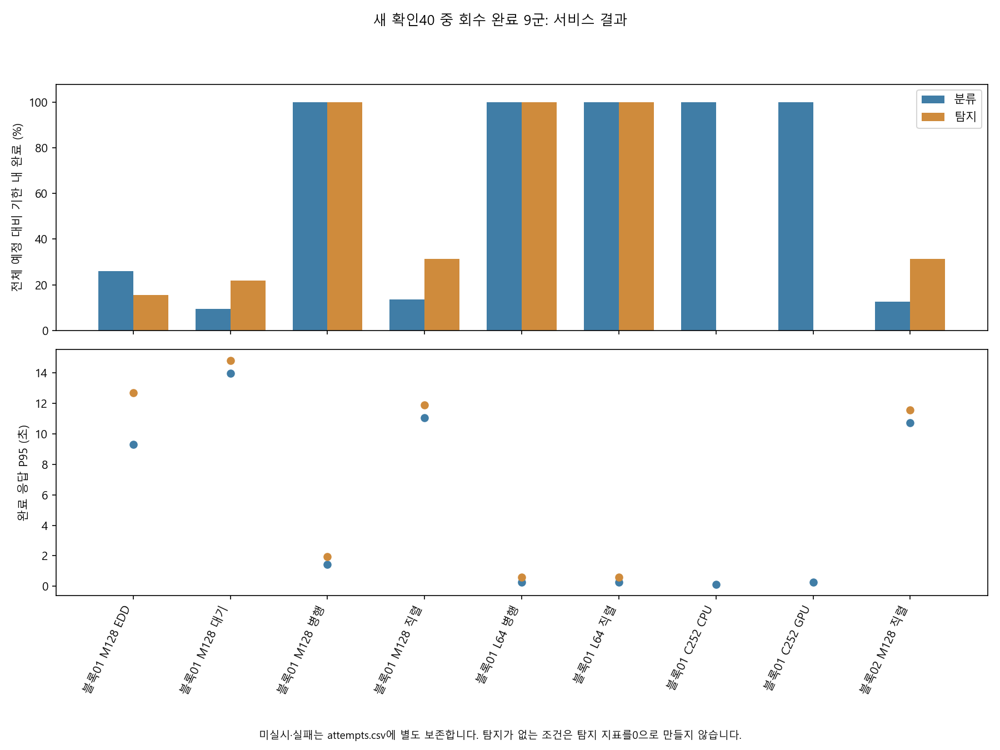
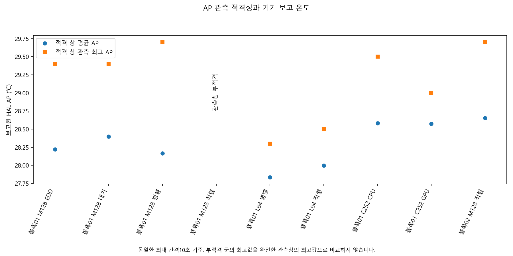
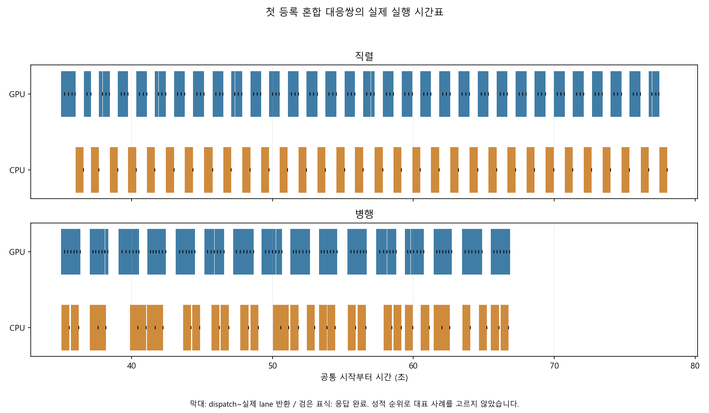
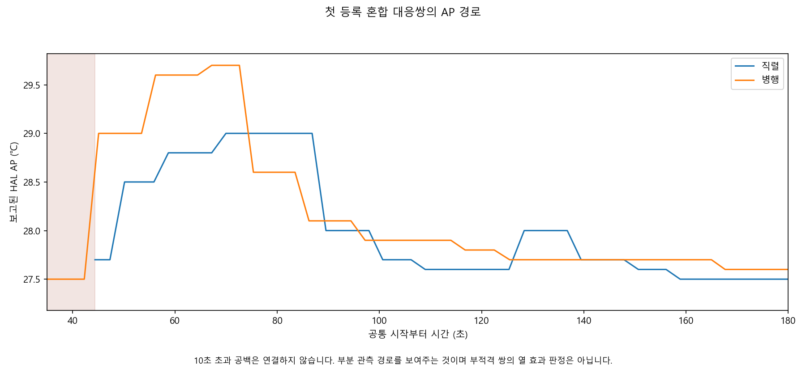

정상 회수 9/40군 · 해당 요청 1272건 완료 · AP 관측 적격 8/9군
실제 기기 보고값의 검증 범위를 구분합니다. J는 공식 미판정이며, 조건부 에너지 분석은 별도입니다. 미실시·실패를0성능으로 평균내지 않고, AP 부적격 군을 열 비교에서 제외합니다.
전체 조건 · 40군 원장 · 대응 차이 · 반복 요약 · 시작 상태
| 조건 | 완료/예정 | 분류 기한 내 | 탐지 기한 내 | AP 창 |
|---|---|---|---|---|
| 블록01 M128 EDD | 128/128 | 25/96 | 5/32 | 적격 |
| 블록01 M128 대기 | 128/128 | 9/96 | 7/32 | 적격 |
| 블록01 M128 병행 | 128/128 | 96/96 | 32/32 | 적격 |
| 블록01 M128 직렬 | 128/128 | 13/96 | 10/32 | 부적격 |
| 블록01 L64 병행 | 64/64 | 32/32 | 32/32 | 적격 |
| 블록01 L64 직렬 | 64/64 | 32/32 | 32/32 | 적격 |
| 블록01 C252 CPU | 252/252 | 252/252 | 0/0 | 적격 |
| 블록01 C252 GPU | 252/252 | 252/252 | 0/0 | 적격 |
| 블록02 M128 직렬 | 128/128 | 12/96 | 10/32 | 적격 |



